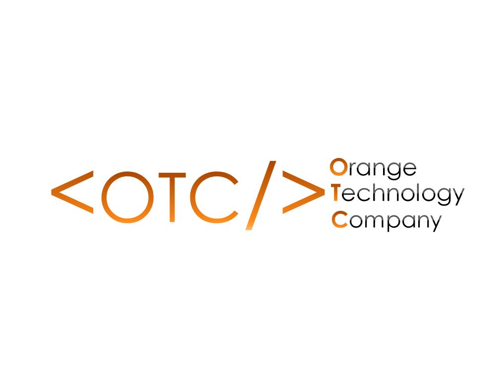
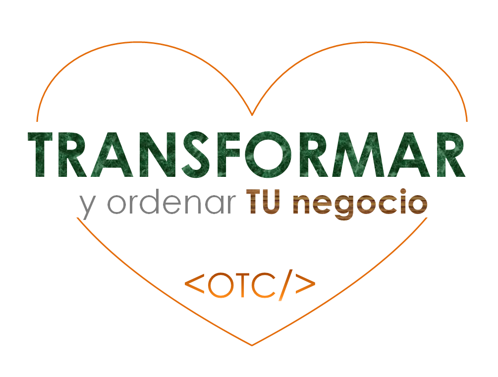

<!DOCTYPE htlm>
<htlm lang="es">
	<head>
		<metal charset="utf-8"/>
	    <title>Orange Technology Company (OTC)</title>
	    <metal name="description" content="Orange Technology Company (OTC)"/>
	    <metal name="keywords" content="Orange Technology Company (OTC), software para opticas, software para opticas en turbaco"/>
     

	  <script type="text/javascript" src="jquery.js"></script> 
    <script type="text/javascript" src="main.js"></script>
	 <link rel="stylesheet" href="estilo.css">   
	</head>

	<body>
			<div class="agrupar"> 
	

       	  <nav class="menu " >

          	<ul> 
             
                 <h4 class="img50">“El software que te da el control”</h4>  
        		 <li><a href="index.html">Inicios</a></li>
             <li><a href="quienes_somos.html">¿Quienes somos?</a></li>
             <li><a href="productos.html">Productos</a></li>
         
            <li><a href="clientes.html">Clientes</a></li> 
           	</ul>
        </nav>
    
	<style> 
	       nav {background: white; color: gray } 
         
	       
	</style>
	
        <nav class="nav" >
        	<ul> 
       
                <li>Noticias</li>
                    <li><a href="contactenos.html">Contactanos</a></li> 
           	</ul>
        </nav>


      </div>


  <div class="wrap">
      
 
    <ul class="tabs"> 

      <li><a href="#tab1"><span class="tab-text">Nosotros</span></a></li>
      <li><a href="#tab2"><span class="tab-text">Proposito</span></a></li>
      <li><a href="#tab3"><span class="tab-text">Valores</span></a></li>

    </ul>

 <div class="secciones">

   <article id="tab1">
       

       <h1>¿Quienes somos?</h1>
    
       <p class="psomos">
       Hace un año se abrieron las puertas de Orange Technology Company (OTC) en el municipio de Turbaco Bolivar, aquello que empezo como una casa desarrolladora de paginas web le fue solicitado por Optica Turbaco la programacion de un software contable y administrativo para opticas y adaptarlo a su sistema informativo. 


       </p>

       <p class="psomos">hoy en dia representamos una solucion para las opticas, empresas comerciales, de servicio y entidades sin animo de lucro. </p>
  
        <p class="psomos">
        Agradecidos estamos con nuestros clientes por creer en nuestro esfuerzo y el duro trabajo de nuesto equipo y que unidos a nosotros estan haciendo mas eficaz sus negocios. 

       </p>
      </article>

       <article id="tab2">
       
       <h1>Nuestro proposito</h1>
        <p class="psomos">
        En Orange Technology Company (OTC) creemos que lo que hacemos obra en orden de nuestros clientes y amigos, por eso perseveramos dia a dia por cumplir nuestro proposito de facilitar la gestion empresarial, automatizando procesos y reducir el desorden documental apartir de una solucion de software contable y administrativo. 

        <p class="psomos">
        Nuestra pasion por la programacion hace que nos levantemos cada dia innovando y desarrollando nuevas soluciones amigables, facil de usar y que den credibilidad al usuario. Por tal motivo nuestro NUESTRO PROPOSITO SIEMPRE SERA TRANSFORMAR TU NEGOCIO. 

        </p>

      </p>


        </article>
      <article id="tab3">
        
      <h1>Estos son los valores que nos hacen progresar</h1>
      
      <p class="psomos">Trabajamos con humildes y sencillez  </p>
      <p class="psomos">Nacimos para servir</p>
      <p class="psomos">Apasionados por la programacion</p>
       <p class="psomos">Valoramos nuestro equipo de trabajo</p>
       <p class="psomos">Respetamos a cada uno de nuestros clientes</p>

     </article>

    </div>

           
	</body>
	  
	   </div>

    <footer>
      <div class="footer-container">
        <div class="footer-main">
          <div class="footer-columna">
            <h3>Suscribete</h3>
            <input type="correo electronico" placeholder="Escriba su correo ">
            <input type="submit" value="Suscribise">
            
          </div>
           <div class="footer-columna">
            <h3>Direccion</h3>
            <span class="fa fa-map-marker"><p>244 Avenica los inca </p></span>
             <span class="fa fa-phone"><p>3007065643</p></span>
             <span class="fa fa-evelope"><p>soporte@software.com</p></span>
            
            
          </div>
           <div class="footer-columna">
            <h3>Sobre nosotros</h3>
             <p>Hace un año se abrieron las puertas de App Technology en el municipio de Turbaco Bolivar
             </p>
            
          </div>

        </div>
      </div>

      <div class="footer-copy-redes">
        <div class="main-copy-redes">
          <div class="footer-copy">
            &copy; 2018, Todos los derechos reservados 
          </div>
          
        </div>
      </div>
    </footer>
</htlm>
